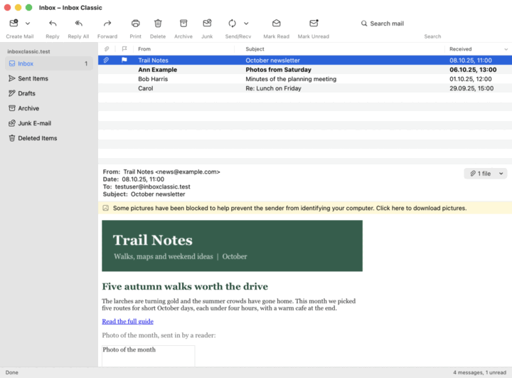

The main window
The parts of the main window: the folder list, the message list, the reading pane, the toolbar and the status bar.

- The folder list, on the left, has your accounts and their folders. A folder with unread mail is bold, with the number of unread messages after its name. With two or more accounts, All Inboxes is at the top.
- The message list, at the top right, has the messages of the selected folder. Unread messages are bold. Click a column heading to sort by it, and click it again to reverse the order.
- The reading pane, below the list, shows the selected message.
- The toolbar, at the top, has the commands you use most, such as Create Mail, Reply and Send/Recv, and the search box.
- The status bar, at the bottom, counts the messages and says what Inbox Classic is doing, including the last problem it had.
Drag the borders between the parts to change their sizes.
The menus are in the menu bar at the top of the screen. Right-click a message, a folder or an account for the commands that work on it.
A collapsed account, or a collapsed folder with folders in it, shows the unread messages of the folders it hides. Click an account’s name to open or close its folders.
When Inbox Classic starts, it shows the newest message of the first account’s Inbox, or of All Inboxes when you have several accounts.
To open this help, choose Help > Inbox Classic Help or press ⌘?. In another window, the same key opens the topic about that window.